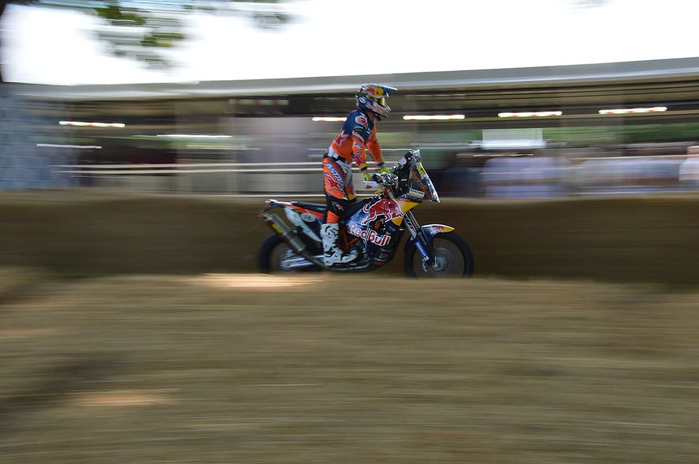

Dakar ·
Aston Martin estreia no Dakar em 2027 com Alonso, Loeb e Lucas Moraes

A Aston Martin confirmou que vai disputar o Dakar pela primeira vez em 2027, com uma equipe de três carros Dreadnought construídos pela Prodrive. A escalação reúne Fernando Alonso, o francês Sébastien Loeb e o brasileiro Lucas Moraes, campeão de rali-raid e já pódio no Dakar.
Alonso disse que a Fórmula 1 continua sendo sua prioridade. A prova de 2027 sai da Arábia Saudita e passa a ser disputada em Portugal e Marrocos, de 9 a 23 de janeiro.